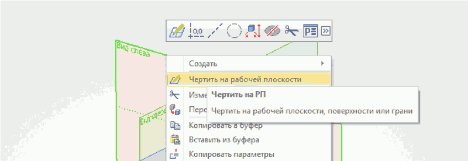
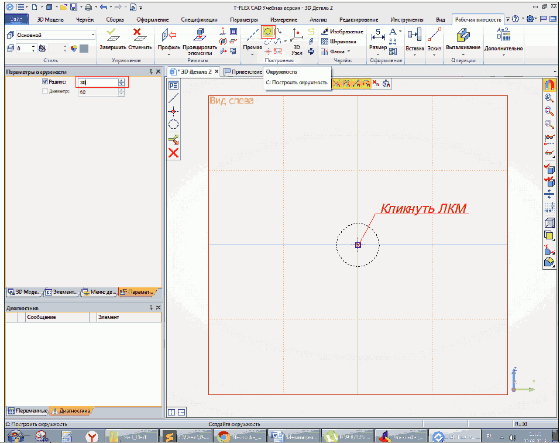
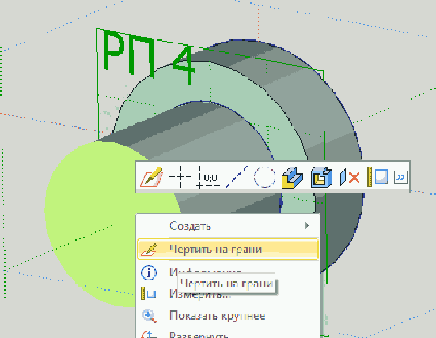
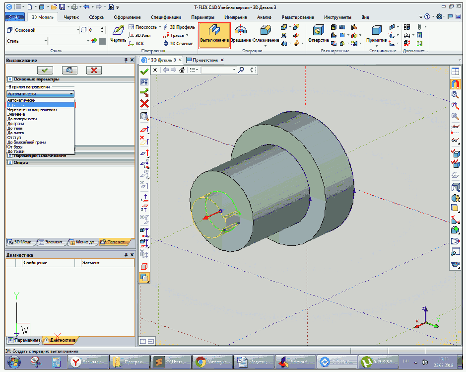
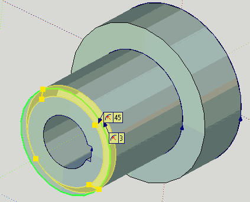

Создадим 3D — модель простой детали (её чертёж мы делали в курсе изучения BricsCAD)
Запустим T-FLEX.При запуске окроется окно ПриветствиеПодробную справку по любой команде
T-FLEX можно получить, нажав клавишу F1 после запуска команды.
Кликните по элементу управления Настройка в верхней части окна
Кликните по пункту Настройка меню и поставте галочку на
Режим ленты
Выберите 3D Деталь в окне Создать новый документ
Откроется следующее окно
Отметьте в панели Селектор опцию Выбирать элементы всех типов
Сделайте щелчок ПКМ (правой клавишей мыши) на рабочей плоскости Вид слева и в открывшемся меню выберите Чертить на рабочей плоскости

Плоскость развернётся паралельно экрану. Выберите Построить окружность на панели Построения и кликните в центре плоскости. В появившееся слева окно
Параметры окружности введите радиус окружности (30мм).

Нажать Enter для завершения построения окружности
Кликните по элементу управления Изображение
(панель Построения ) ... ... и выберите ЛКМ (левой клавишей мыши) окружность.
Окружность обведётся линией
Сделайте щелчок ПКМ и в открывшемся меню выберите ЗавершитьМы вернёмся в 3D - пространство.
Несколько слов о том как в нём перемещаться:
приближать и удалять изображение можно вращая колёсико мыши;
перемещать — зажав колёсико;
поворот изображения осуществляется c нажатой левой кнопкой мыши.
Придадим объём нашей окружности с помощью выдавливания контура на заданное расстояние. Воспользуемся инструментом Выталкивание. После выбора команды слева появится окно параметров, где укажем длину выталкивания (20мм) и выделим контур окружности щелчком по нему ЛКМ.
Для завешения нажать Enter или галочку над окном параметров. Для выхода из команды нажать Esc
или крестик над окном параметров.
Выбрать командуУказать длину выталкивания
Теперь построим второй цилиндрический сегмент детали.
В качестве плоскости для построения окружности выберем грань на торце созданного нами цилиндра. Сделаем на ней щелчок ПКМ и выберем в открывшемся меню Чертить на грани. Повторив действия, которые мы производили при построении первого элемента построим цилиндр диаметром 40мм и длиной 40мм.
Обратим внимание на Дерево модели, расположенное с левой стороны окна. Там отображабтся все элементы модели.Выполним отверстие со шпоночным пазом. Сделаем эскиз на грани.

Построим окружность с радиусом 10мм.
Выполним разметку шпоночного паза. Воспользуемся инструментом
Прямая. Из предложенных вариантов построения прямых (на появившейся слева узкой панели) выберем две взаимно перпендикулярные прямые.Выберем центальную точку ЛКМ и клавишу Esc для приостановки дальнейшего построения прямых.
Построим вертикальную прямую, смещённую относительно центральной на 11,5мм. Сделаем щелчок ЛКМ по исходной прямой и движением мыши указать направление смещения.В окне параметров зададим расстояние смещения (в качестве разделителя использовать точку) и нажать клавишу Enter, для приостановки построения Esc.
Аналогично построим две горизонтальные прямые со смещением от центральной на 3мм в обе стороныВыполним обводку необходимого контура линией изображения. Запустим команду Изображение и последовательно начнём указывать точки на прямых участках.
Дойдя до окружности укажем точку на ней...... а затем последнюю точку оружности и клавишу Esc для приостановки команды.
Выйдем из эскиза щёлкнув ПКМ и выбрав пункт Завершить.
Сделаем ненужную на данный момент плоскость 5 невидимой. Щёлкнув по ней
ПКМ выберем в контексном меню Видимость — Погасить
Объединим две операции выталкивания в одно тело. Выберем Булева — СложениеИ укажем исходные тела на модели или в дереве построения. Для завершения щёлкнем по галочке.
Выполним вырез в детали. Воспользуемся инструментом
Выталкивание.

В параметрах в раскрывающемся меню выберем длину выталкивания
Через всёВ качестве булевой операции выберем Вычитание
Щёлкнуть по кнопке Выбрать исходное тело для булевой операции и указать нашу деталь (непосредственно на виде или в дереве модели)...
... и щёлкнуть по зелёной галочке для завершения. В детали появится появится отверстие с вырезом под шпонку как результат вычитания одного тела из другого.
Создадим фаску 3 х 45 град. Щёлкнем инструмент Сглаживание и выберем в раскрывающемся меню РёберВ раскрывающемся меню Параметры выберем Фаска (длина — угол).
Укажем длину фаски 3мм, угол оставим по умолчанию 45 град.Щёлкнем по круговому ребру детали...

... и зелёную галочку для завершения. На детали образовалась фаска.
Выполним скругление. По аналогии с предыдущей операцией выберем инструмент Сглаживание — Рёбер, а в меню Параметры выберем СкруглениеУкажем радиус скругления 5мм
Щёлкнем по круговому ребру...... и по зелёной галочке для завершения. На детали добавится скругление.Сохраним нашу деталь под названием Колесо